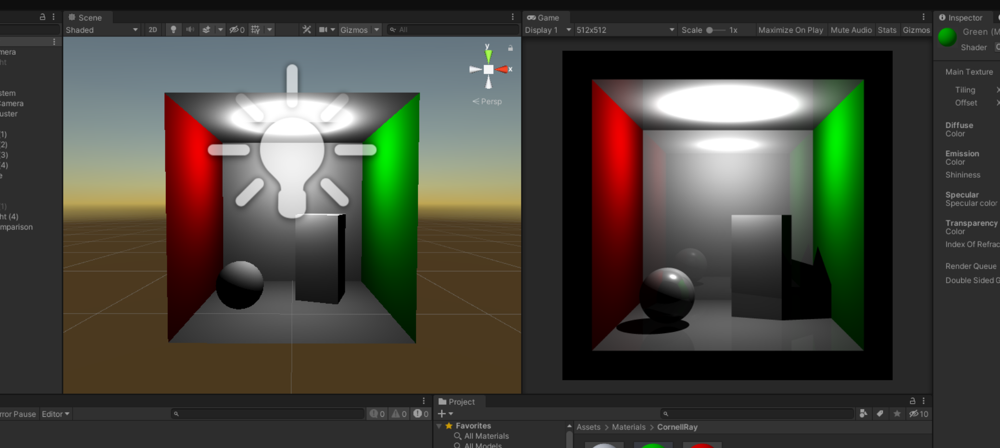

My Various Projects
"Failsafe", an idle, factory building game

Failsafe, a game developed for the University of Washington Game Development Capstone. Developed in 10 weeks from ideation to publication and iteration, it garnered about 4000 players during the 2-3 weeks after publication. During development, the capstone focused on strengthening game development skills and Agile and Scrum development and principles.
OpenCV: Identification of R-Card E. coli Colonies

A project using OpenCV to identify and highlight E. coli colonies formed on a rapid bacterial development test.
Made to better learn and use OpenCV for public health purposes, along with Docker deployment.
Deployed to Render website:
https://colonyscanner.onrender.com/
Ray tracing shader in Unity
Made in Unity using the Blinn-Phong ray tracing model to render objects
Game Jam: 1 Week Doom-like Game

A game made in about a week with three others for a graphics course, getting in the top 5 voted on.